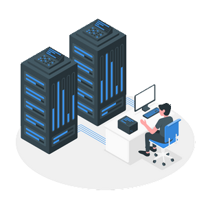

Introdução
Se você trabalha, estuda ou desenvolve aplicações, talvez tenha percebido que uma das dificuldades que prejudicam o conhecimento e também
a evolução dos projetos, é a dificuldade para criar uma infraestrutura de rede.
Seja ela cliente servidor, servidor web, banco de dados ou até mesmo projetos de IoT, onde precisamos enviar dados através da internet e
acessar esses dados de forma remota. Fazer isso de forma alternativa acaba gerando custo excessivo ou as vezes encontramos problemas complexos que
impossibilitam o avanço do aprendizado.

Pelo fato da internet que usamos em nossas residências ser projetada de uma forma em que toda conexão externa seja bloqueada,
tanto pelo firewall do sistema operacional ou pelo próprio roteador, ainda existe o fato de que nosso IP público sempre muda com o tempo.
Outra pedra no caminho é que muitos provedores de internet estão compartilhando o mesmo IP público de vários clientes de uma região usando
uma técnica chamada CGNAT, ficando impossível usar encaminhamento de portas sendo que o cliente não tem acesso ao roteador “público”.
Mesmo usando um serviço de DDNS não conseguimos acessar nosso host de forma externa.
Escolhendo um servidor:
Há muito tempo tenho vontade de usar essas placas de desenvolvimento chamadas de (single board computer), a mais conhecida entre várias é a famosa Raspberry PI.
Para este projeto acabei escolhendo um singelo OrangePi zero LTS por questões de custo benefício.
CPU: Quad Core, RAM: 512MB, Storage: MicroSD 32GB, Ethernet rj45, USB 2.0. Também possui entrada e saídas digitais e analógicas, permitindo usar este servidor para controlar diretamente dispositivos IoT. Valor estimado 25 Euros.
Para não estender muito este guia, vou dividi-o em partes.
No próximo vou mostrar como dar os primeiros passos para configurar e instalar o sistema operacional.
Em seguida vou mostrar como configurar um display oled1306 i2c para mostrar as informações do sistema, assim não precisamos usar nenhum tipo de monitor.
Quando nosso sistema estiver configurado, vamos poder instalar infinitos tipos de aplicações web. Já deixando um spoiler, podemos usar um sistema de Media Plex que é um equivalente ao Netflix, a diferença é que acessamos nossos filmes pessoais. Também vamos instalar os servidores de HTTP, PHP, NODEJS, MYSQL.
Vamos instalar também um sistema de nuvem privada, e tentar criar máquinas virtuais dentro desse servidor usando contêiners DOCKER onde vamos fazer o acesso a essa máquina via SSH. Também vamos criar um servidor NAS para acessar nossas pastas e arquivos pessoais através da internet.
Vamos fazer tudo isso de forma segura sem expor nosso IP na internet e sem precisar redirecionar portas no nosso roteador. Tudo isso com proteção contra ataques DDoS e podendo fazer autenticação usando Zero Trust.